Brake System
Designed, analyzed, manufactured, and validated a complete braking system for B23.
As Brakes and Driver Interface (BDI) Lead, I led the design, analysis, and manufacturing of the full brake system for Berkeley Formula Racing’s B23 car.
This included rotors, calipers+brake pads, brake bias adjustment, hydraulic system (brake lines, master cylinders, fluid resevoirs, pressure transducers, etc).
The system required balancing performance, reliability, manufacturability, and strict FSAE safety constraints. Work included design and modeling,
FEA and structural analysis, thermal simulations, physical testing, and manufacturing.
Some projects listed below had contributions from other BDI members (ownership and my contributions will be noted in these cases).

Overview
The B23 vehicle was the team’s first fully designed car since COVID-19, which meant there was little to no documentation and knowledge transfer from previous years. As a result, the brake system had to be developed from the ground up, including design decisions and processes, validation methods, and manufacturing processes.
The system was designed to improve braking consistency, reduce weight, and enhance driver control. Key improvements included adding driver brake bias control for the first time, developing rotor simulation processes, creating a more accurate prake performance matlab script for component selection, and better packaging within the rest of the car (chasssis and wheel shells).
B22 Brake Failure Analysis
During Endurance at competition, the B22 (aka "B20", used interchangeably) vehicle was unable to finish due to sudden loss of brake pressure. The failure occurred after the vehicle received a black flag, resulting in the driver applying a high braking load while entering the pits.
Root Cause Analysis
Hydraulic pressure data collected during the endurance run was critical in distinguishing between leakage and performance degradation. The brake pressure data showed a clear drop in front brake pressure immediately after the black flag event, corresponding to when engine RPM dropped to zero. This indicated a loss of pressure in the front braking circuit rather than a gradual degradation due to thermal effects or pad wear.
Part inspection revealed that the bleeder screw on the front-right caliper had was mising. The component was not recovered, but inspection of the caliper showed that the threads remained intact and the caliper functioned normally after installing a replacement screw. It was noted that failure was localized to a single mechanical component rather than a system-wide issue. The most likely failure mode was mechanical wear of the bleeder screw due to repeated tightening and loosening during brake bleeding procedures throughout testing. Over time, this likely reduced the effective thread engagement or compromised the structural integrity of the screw.
Under normal operation, the component remained secure; however, the high transient load introduced when the driver aggressively applied the brakes during the black flag event likely exceeded the remaining strength of the worn component, causing it to fly off the caliper and resulted in an immediate loss of hydraulic pressure in the front circuit.
Comp Front Brake Pressure Data:

Preventative Measures
- Replace aging calipers and hardware (the B22 components had been in use since 2018)
- Implement routine inspection logs to track condition of fittings, threads, and fasteners
- Establish pre-run validation procedures, including checking all fittings and applying high-load brake tests (“donkey kick”) before runs
- Standardize replacement intervals for critical wear components such as bleeder screws
This failure highlighted the importance of not only designing robust systems, but also implementing structured maintenance, inspection, and validation procedures to ensure reliability under competition conditions.
Brake Script
Pedal Ratio Script
Using the updated brake pedal geometry (see pedal design), I calculated the pedal ratio, which serves as a key input to the brake script model. The pedal ratio directly relates driver input force to master cylinder force, making it critical for accurately predicting system pressures and required driver effort:
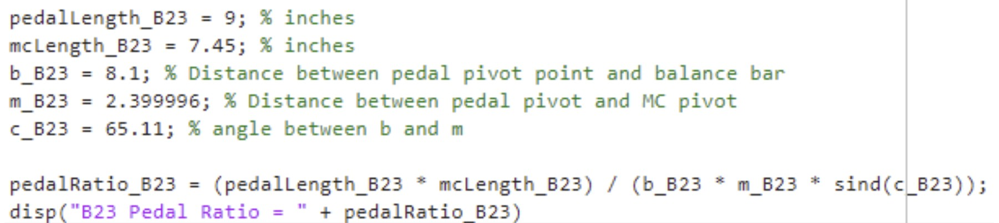
Brake System Modeling
Project Partner: Ezra Apple. This tool was initially improved upon by Ezra, who incorporated preliminary aerodynamic center of pressure (CoP) assumptions. I contributed to debugging and validating the script early on, and later took ownership of refining and expanding the model.
The team uses a MATLAB-based brake script to simulate braking performance and guide component selection, including master cylinders, calipers, and rotor geometry. The script models vehicle deceleration, hydraulic pressures, and front/rear brake force distribution as a function of pedal input.
Incorporating Variable Aerodynamic CoP
A key improvement was introducing a variable aerodynamic center of pressure based on vehicle deceleration. Previously, the model assumed a fixed CoP, which did not align with observed vehicle behavior — specifically, the car exhibited slight oversteer under braking despite predictions suggesting a balanced system.
To improve accuracy, I implemented a model where aerodynamic load transfer varies as a function of deceleration (in Gs), using linear interpolation between minimum and maximum CoP values:
This allowed the model to more accurately capture how aerodynamic forces shift during braking events, improving correlation between simulation and real-world driver feedback.
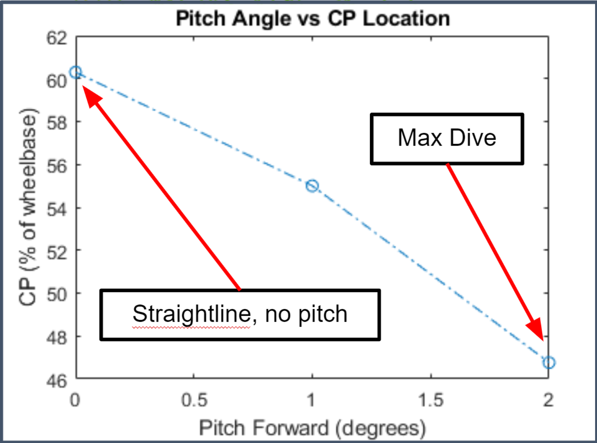
Model Refinements
In addition to the CoP update, I refined several key parameters in the model, including:
- Updated aerodynamic downforce model for the B23 aero package
- Revised CoP bounds based on aero data
- Vehicle parameters such as mass, driver weight, and geometry
- Separate friction coefficients for front and rear rotors
After incorporating these updates, the model predicted slight oversteer under braking, which aligned with observed behavior from B22:
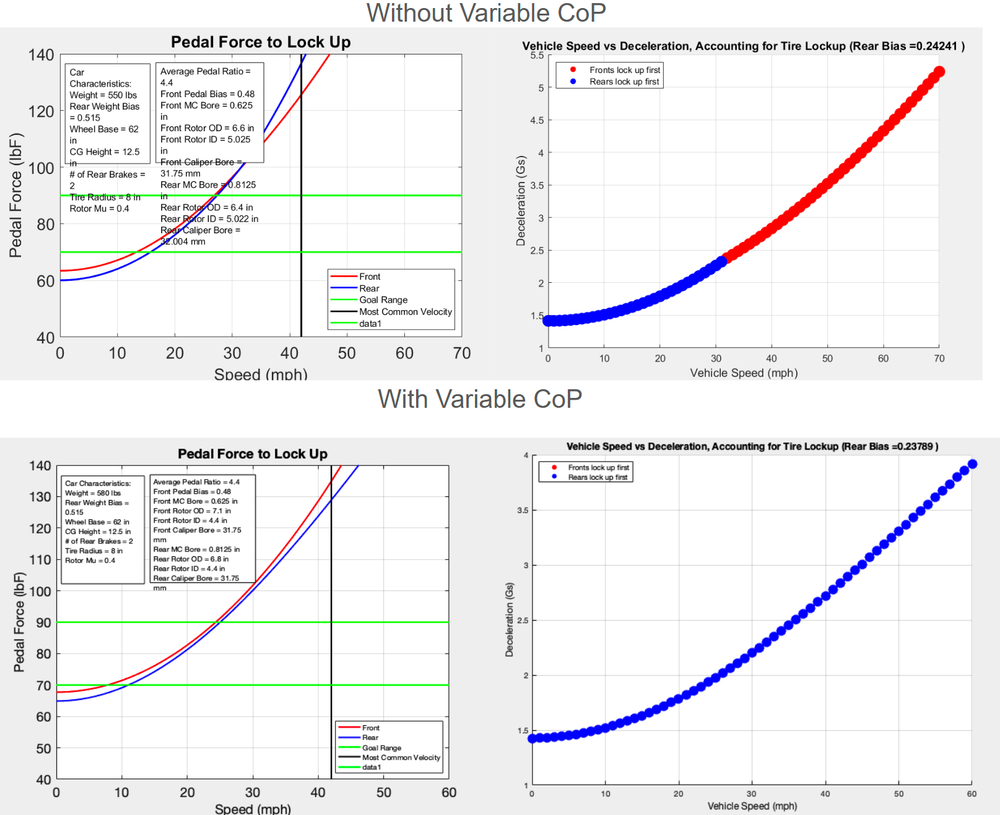
Design Application
The brake script was used to guide key design decisions, including rotor sizing, component selection, and brake bias optimization. The goal was to minimize required pedal effort while achieving balanced braking performance.
Optimal brake bias was determined by aligning front and rear brake force curves such that they intersect at the average vehicle velocity, ensuring that both axles approach lockup simultaneously. There should also be a slight front bias (as understeering is safer than oversteering) to maintain vehicle stability under braking.
Target pedal force ranges were determined experimentally by measuring driver input during aggressive braking events. These values were used to ensure the system remained within comfortable and controllable limits for the driver.
While the script was effective for system-level design, rotor geometry required additional thermal analysis to evaluate temperature limits and brake pad performance. This is discussed further in the rotor design section.
The final brake script output, shown below, reflects the selected components and validated system performance:
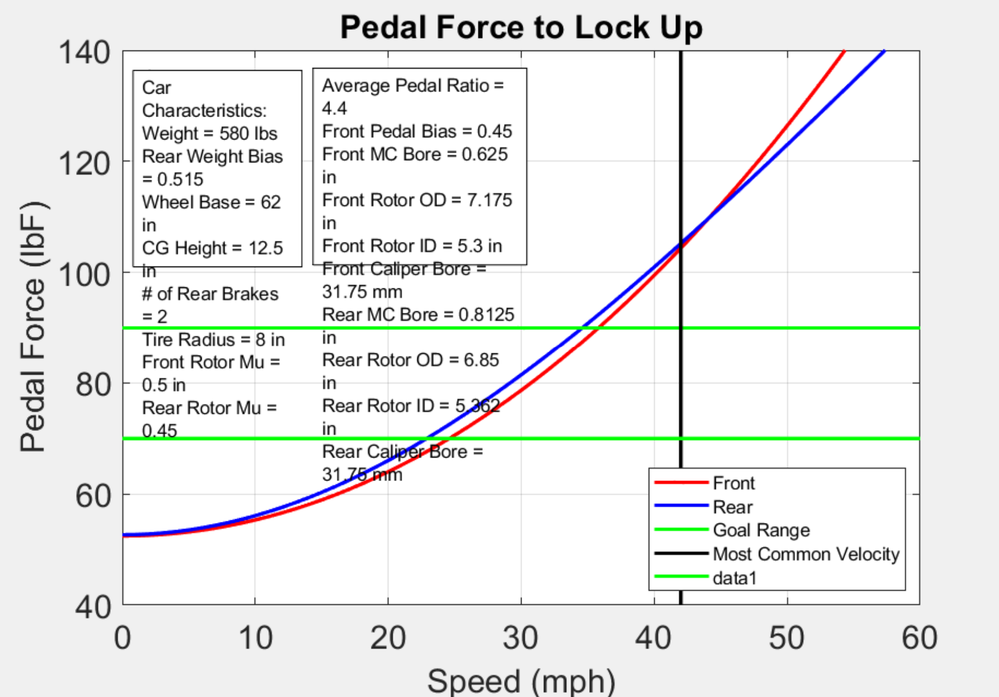
Calipers
Brake caliper selection was constrained primarily by wheel packaging, rotor geometry, and braking performance Multiple commercially available caliper options were evaluated to determine which configurations satisfied braking requirements while remaining within the available wheel envelope.
Candidate calipers were compared based on piston area, mass, stiffness, pad availability, mounting geometry, and overall dimensions. The brake script used to verify that each caliper option produced acceptable front-to-rear brake bias and sufficient braking torque under expected operating conditions.
Packaging constraints were especially critical due to limited clearance between the caliper body and the wheel barrel. Previous rotor and caliper configurations had extremely tight shell clearance, requiring portions of the caliper housing to be manually ground down to avoid wheel interference.
Rotor outer diameter, rotor hat geometry, and wheel barrel geometry were iteratively adjusted alongside caliper placement to maximize clearance while maintaining full brake pad sweep across the rotor face. Particular attention was given to:
- Wheel barrel to caliper shell clearance
- Spoke clearance during steering and suspension travel
- Brake pad radial alignment with rotor friction surface
- Rotor and caliper manufacturability
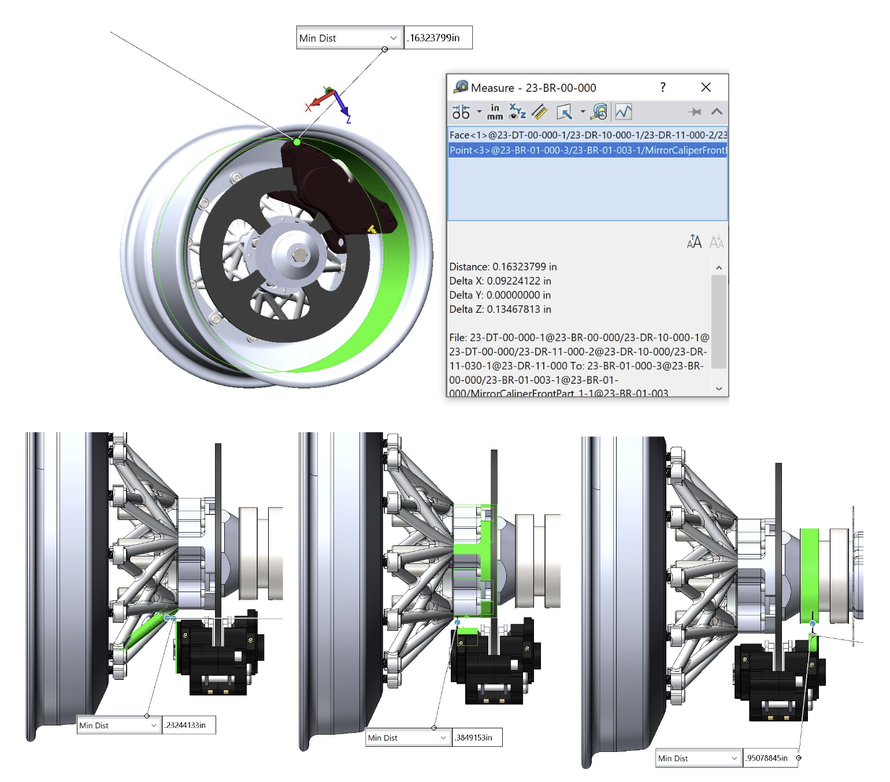
Brake Pads
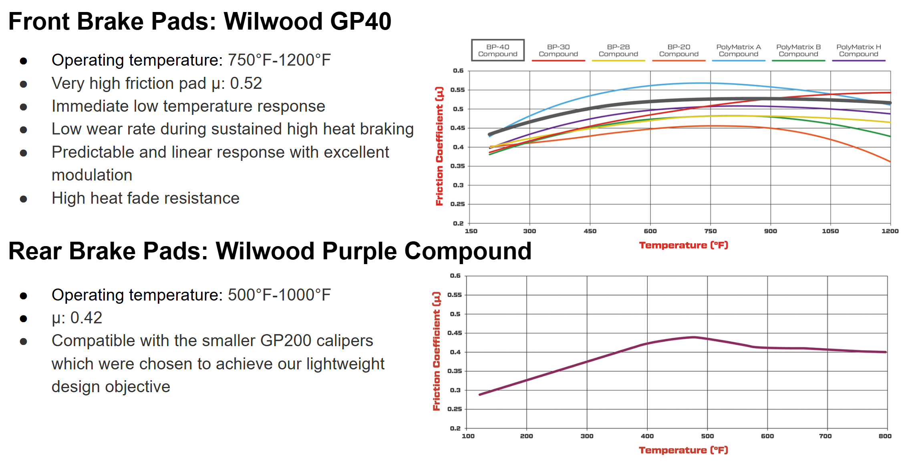
Rotors
The rotor system was redesigned to improve braking consistency, thermal performance, manufacturability, and reliability while packaging within wheel and upright constraints. We iterated rotor dimensions, geometries, and materials to balance pedal effort, brake bias, thermal capacity, and unsprung mass while ensuring compatibility with the calipers, wheel packaging, and suspension geometry. Additional analysis focused on shear loading, fatigue life, and thermal behavior under endurance conditions to improve durability and reduce the likelihood of brake-related failures during competition.
Objectives: low weight, rotor width optimized to have an operating temperature that supports peak brake pad performance, tongue strength FOS>2
Mounting Strategy
I evaluated both fixed and floating rotor mounting strategies before selecting a floating rotor design. Fixed rotors are simpler and less expensive, but constraining the rotor directly with bolts can lead to uneven thermal expansion, increasing the likelihood of rotor warping under repeated braking events.
Floating rotors allow the brake disc to expand more freely under thermal loading while maintaining more consistent contact with the brake pads and improves alignment between rotors and pads. This allows for consistent thermal expansion of the entire rotor thus reducing the likelihood of thermal distortion, and maximizes rotor-to-pad contact during operation. Floating rotors also reduced overall rotor mass, helping decrease unsprung weight.
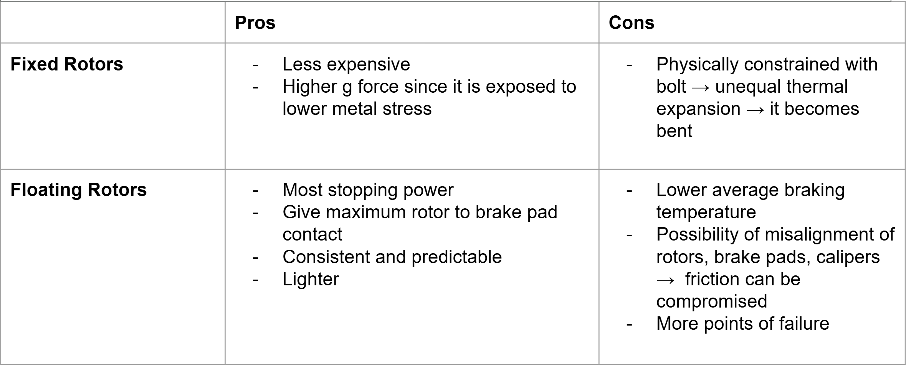
Although floating rotors introduce additional complexity and potential failure points through the mounting hardware, the improved thermal behavior and braking consistency made them the preferred choice for the vehicle.
I also explored different floating rotor retention methods and selected banana-shaped tongue mounts over snap ring or bobbin retention. The curved tongue geometry simplified rotor assembly and disassembly while reducing stress concentrations at the mounting interfaces. This design improved manufacturability and serviceability compared to more constrained retention methods.
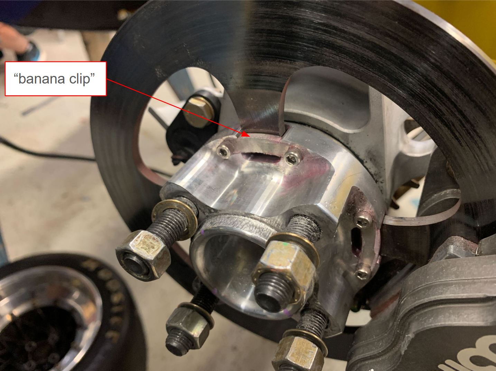
Geometry and Structural Analysis
Project Owner: Liam Brownlie. Most of the structural FEA analyses were run by Liam, while I worked closely with him to review simulation methodology, evaluate design tradeoffs, and iterate rotor geometry throughout development.
Rotor outer diameter was maximized within wheel shell and caliper packaging constraints in order to maximize brake torque and braking performance. Rotor sizing was constrained by the wheel shell dimensions and the Wilwood GP320 front and GP200 rear calipers. The final rotor diameters also ensured full brake pad contact across the rotor surface.
The rotor inner diameter was selected through thermal analysis and testing to determine the rotor width that would maintain the brake pads within their optimal operating temperature range while minimizing unnecessary mass. Multiple inner diameters were tested and compared based on predicted steady-state temperatures, weight reduction, and fatigue performance.
The rotor tongues were redesigned using continuous tensile-triangle style profiles instead of the previous rounded spline-like geometry to reduce stress concentrations and improve load transfer through the tongues. Reference
Structural FEA was performed on both 4130 steel and gray cast iron rotor designs under worst-case braking conditions.
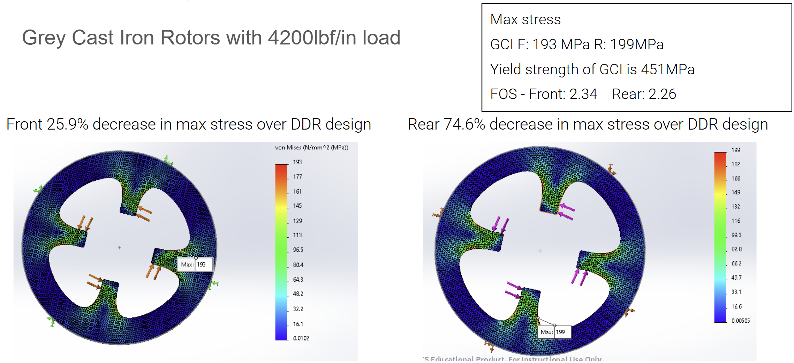
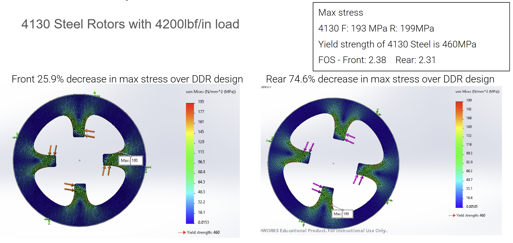
Solid rotors were selected over slotted or drilled rotors because drilled and slotted geometries can introduce stress risers that increase the likelihood of cracking during repeated thermal cycles. Since Formula SAE endurance events involve repeated aggressive braking, durability and crack resistance were prioritized over the minor benefits of drilled or slotted rotor designs.
Packaging
by the wheel shell and brake caliper packaging envelope. Rotor diameters were increased as much as possible while maintaining sufficient caliper clearance inside the wheel assembly. This packaging work ensured full brake pad engagement while avoiding the clearance issues experienced on previous vehicles, where caliper edges required manual grinding for wheel fitment.Rotor Packaging- Tolerance Stackup:
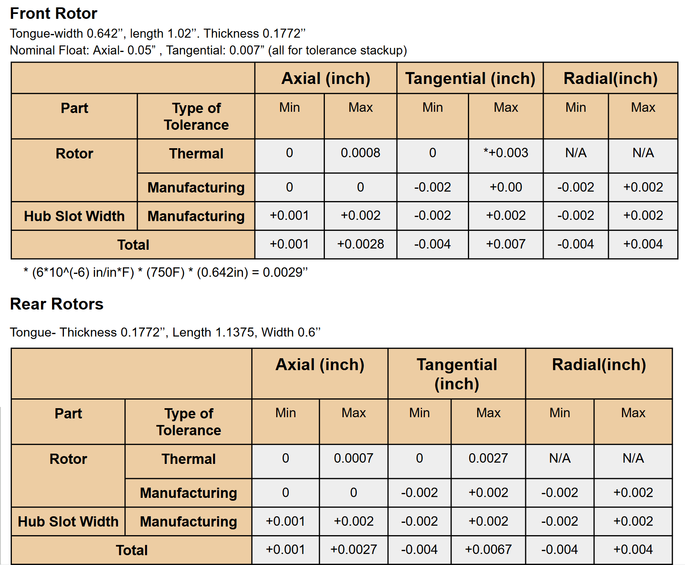
Material Selection
Rotor material trade studies focused primarily on gray cast iron and 4130 steel. Both materials were analyzed to help guide future design decisions. Cast iron was ultimately selected because it had been successfully used by the team for many years, possessed a high melting temperature, and was available through sponsorship.
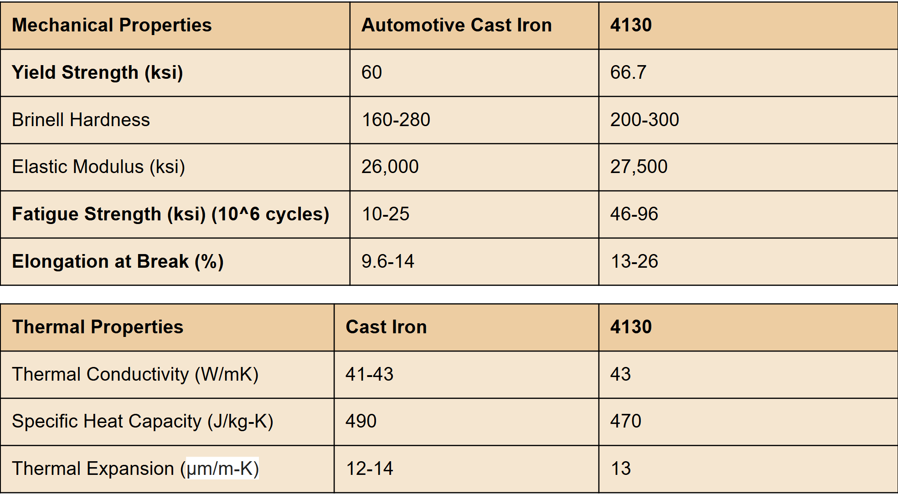
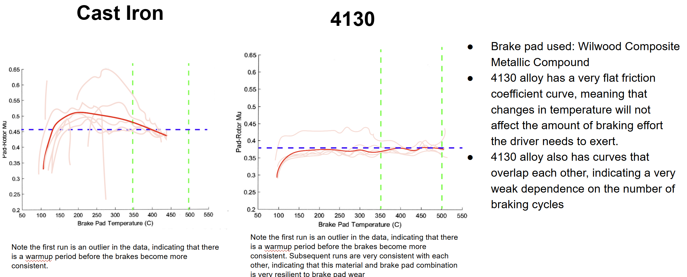
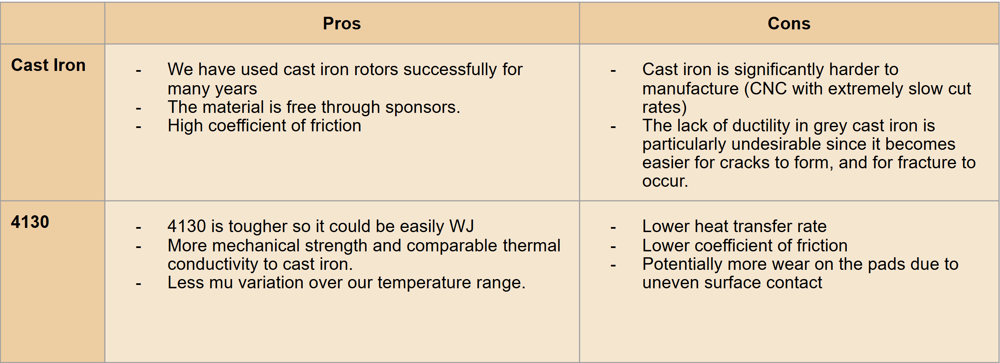
While 4130 steel offered higher mechanical strength and potentially improved durability, concerns remained regarding long-term wear characteristics and a lower coefficient of friction compared to cast iron. Thermal and structural simulations showed similar stress performance between the two materials. Although we had manufactured both 4130 and cast iron rotors, we ultimately ran out of time to test the 4130 rotors due to manufacturing delays. the team prioritized the proven reliability and known braking characteristics of cast iron.
Thermal Analysis and Testing
Project Owner: Brandon Chin. Brandon led most of the thermal simulation efforts while I assisted with and reviewed simulation set up and methodology.
Rotor thermal simulations were developed to optimize rotor geometry and determine the largest possible inner diameter while maintaining brake temperatures within the ideal operating range of the brake pads. Since rotor temperature data from competition was unavailable, temperature measurements collected during 2022 SoCal Shootout were used to develop and validate the simulation model.
A representative “one lap” segment of the SoCal Shootout temperature data was isolated by clipping the data from the beginning of a cooling section (vehicle acceleration) to the end of a major braking event corresponding to a rotor temperature peak.
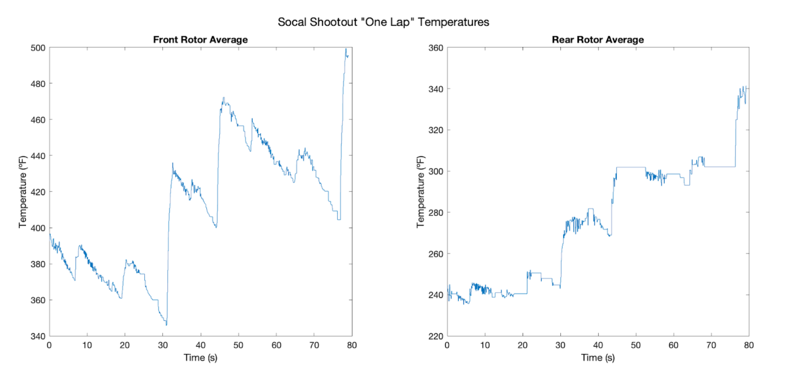
Using the measured rotor temperature change, the braking heat input into the rotors was calculated from:
$$ Q = mc\Delta T $$where \(m\) is the rotor mass, \(c\) is the specific heat capacity of the rotor material, and \(\Delta T\) is the measured temperature change over each time interval. Heat flow into the front and rear rotors was then calculated over time and applied as a transient thermal load within ANSYS.
The original temperature data was sampled at approximately 0.02 second intervals, which resulted in thousands of simulation time steps and excessive computational cost. To improve processing time, the heat flow data was averaged over one-second intervals before being applied to the simulation. The calculated heat flow initially contained both positive and negative values corresponding to rotor heating and cooling. Since convective cooling was modeled separately within the simulation, negative heat flow values were removed so that only braking energy input was applied directly to the rotor.
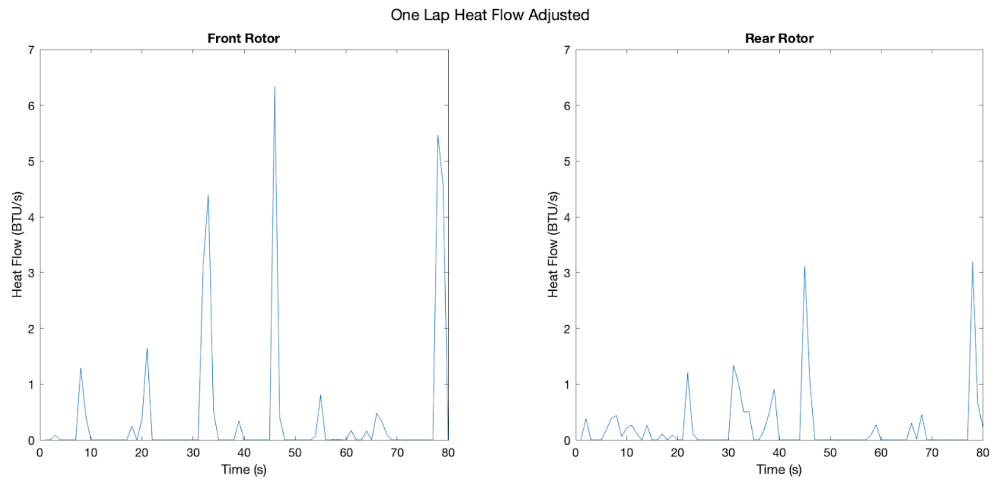
Forced Convection Cooling
In addition to brake heating, the simulations accounted for forced convection cooling caused by airflow over the rotating rotors throughout a lap. A convection coefficient \(h\) was required to model heat transfer between the rotor surface and air:
$$ Q = hA\Delta T $$However, because the braking heat input varied throughout the lap and complete vehicle speed data was unavailable, the convection coefficient could not be directly solved from the measured data over time. Instead, \(h\) was estimated using the following:
Since wheel speed data was unavailable from competition testing, the convection coefficient was calculated using the most common vehicle velocity previously determined from vehicle data analysis, approximately 42 mph. This provided a reasonable approximation of average cooling behavior throughout the lap.
Simulation Validation
The transient heat flow and convection boundary conditions were first applied to the previous generation B20 rotors in ANSYS to validate the simulation methodology against measured SoCal Shootout temperature data. Heat flow multipliers were iteratively adjusted until the simulated rotor temperatures closely matched the experimentally measured IR sensor data.
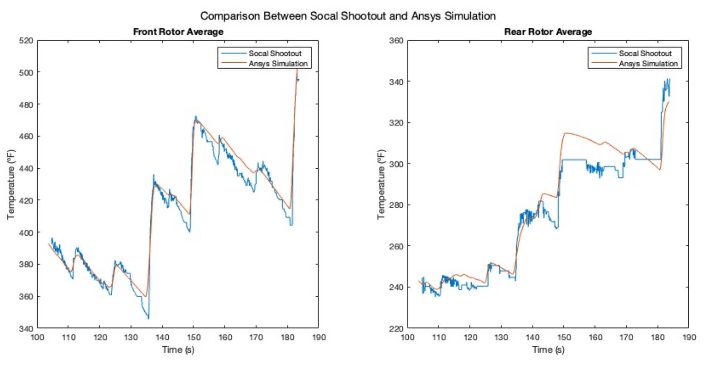
The validated simulation setup was then applied to candidate rotor geometries with varying inner diameters. To estimate steady-state operating temperatures during endurance conditions, the one-lap heat flow profile was repeated over ten simulated laps. Rotor temperatures were evaluated at the brake pad contact region, where thermal performance most directly affects braking behavior and pad friction characteristics.
Thermal analysis results were used alongside structural and fatigue simulations to select the final rotor geometry. Rotor designs were evaluated based on maintaining brake pad operating temperatures within the desired range while minimizing rotor mass and maintaining full brake pad contact. Final simulations predicted peak rotor temperatures that closely matched measured SoCal Shootout data and helped validate the overall thermal modeling approach.
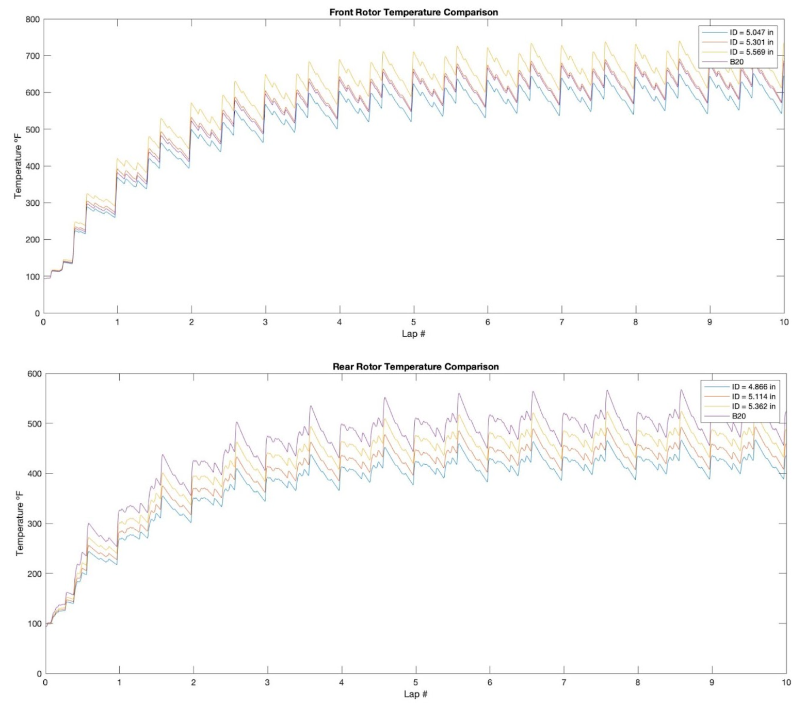
The criteria for the selected rotor geometries were:
- Fronts highest temperature within 750-1000 °F
- Rears highest temperature within 350-550 °F
- Lowest weight
- Passes fatigue analysis
Shear and Fatigue Analysis
Rotor Shear Stress Analysis
Shear stress within the rotor tongue geometry was approximated using the applied braking torque and the effective cross-sectional area resisting the load.
$$ \tau = \frac{F}{A} = \frac{T}{rA} $$Using a braking torque of 4200 lb-in:
$$ \tau = \frac{4200 \text{ lb-in}} {3.3 \text{ in} \cdot (0.1772 \text{ in} \times 0.6 \text{ in}) / 4} \approx 2.18 \text{ ksi} $$The calculated shear stress was significantly lower than the approximate 60 ksi maximum shear strength of gray cast iron, indicating that the tongue geometry could safely withstand the applied braking loads.
Fatigue Analysis
Fatigue analysis was conducted to estimate rotor life under repeated braking cycles. A design life of approximately \(10^5\) cycles was selected based on the estimated number of braking events experienced during vehicle operation.
S-N curve data for gray cast iron was used to determine material fatigue limits. The corresponding fatigue stress limit at \(10^5\) cycles was approximately 31.9 ksi.
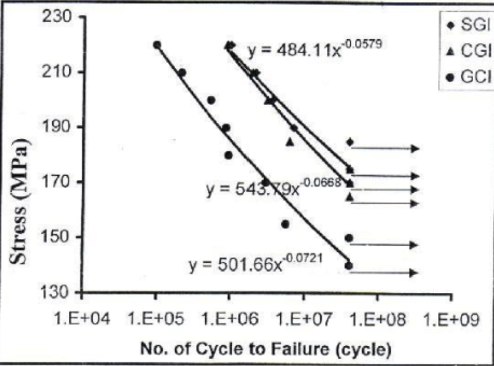
FEA was run using worst-case braking torque conditions corresponding to wheel lockup at the vehicle's most common operating velocity:
- Front braking torque: 3993 in-lbs
- Rear braking torque: 1103 in-lbs
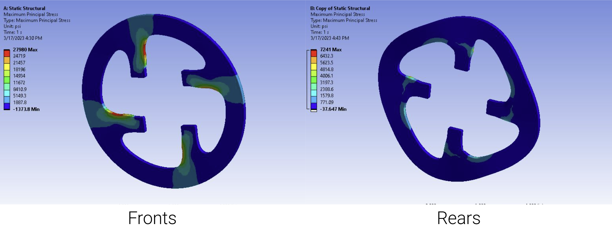
Simulation results predicted a maximum principal stress of 27.98 ksi, which remained below the 31.9 ksi fatigue limit, indicating that the rotors are good for 1e5 cycles.
These results indicated that the final rotor design remained below the fatigue stress limits for the target life cycle requirements, indicating that the rotors would survive endurance loading conditions without fatigue failure. Additional shear and stress analysis was also conducted at the tongue interfaces to verify the integrity of the floating rotor mounting geometry under braking loads.
Final Rotor Design Summary
- Wheel packaging constrained the maximum allowable rotor outer diameter and braking torque capacity
- Rotor inner diameter was optimized through thermal and structural analysis
- Continuous-curvature tongue geometries improved fatigue resistance while reducing weight
- Finite element analysis verified acceptable stress levels under braking loads
- Fatigue analysis confirmed rotor life exceeded the target \(10^5\) cycle requirement
- Gray cast iron provided the best balance of friction performance, strength, and mass
Brake Bias
Brake Bias System
I used the brake script to determine optimal front-to-rear hydraulic pressure distribution under expected braking conditions (brake bias), which was what the default brake bias was set to using the Tilton 77/78 Series Bias Bar. This balance bar provides 9% of pressure bias adjustability, allowing brake balance to be tuned during testing to account for tire grip, driver preference, and dynamic vehicle behavior. For the first time, we also implemented an adjustable brake bias system so that the drivers could tune the brake dias whilst driving and provided significantly greater flexibility for tuning braking performance.
Proportioning valves were initially investigated as an alternative method for brake bias adjustment. However, the concept was ultimately abandoned due to increased system complexity and several functional drawbacks compared to a balance bar system.
Unlike a balance bar, which mechanically redistributes braking capability between the front and rear circuits, a proportioning valve reduces hydraulic pressure to one circuit after reaching a predefined “bite point.” This decreases the total available braking capability of the system rather than redistributing it. In contrast, the balance bar preserves total braking force while shifting brake bias directly between the front and rear brakes.
The balance bar approach also provided more direct and predictable adjustment behavior since the knob mechanically changes the balance bar position rather than relying on pressure-threshold-based proportioning behavior.
Bias Adjuster Mechanism
We initially tried implementing a Tilton brake bias adjuster. However, the bias knob's small plastic-ball ratcheting mechanism proved unreliable and difficult to adjust consistently during operation. To improve robustness and tactile feedback, I switched to a Wilwood brake bias adjuster, which had a sturdier ratcheting mechanism. To integrate the two systems, a custom stainless steel thread adapter was designed and machined to connect the Wilwood adjuster to the Tilton balance bar assembly.
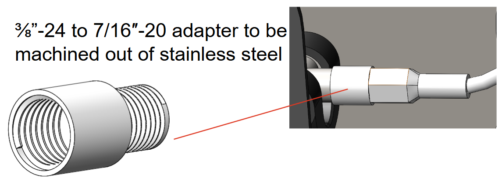
Bias Line Routing and Packaging
Routing the brake bias cable required careful consideration due to the stiffness of the cable housing and the mechanical nature of the balance bar adjustment system. Since the cable directly rotates the balance bar, excessive bends or twisting in the cable routing and extra length increased friction and reduced adjustment smoothness. The line was cut to length and brazed to interface with the balance bar.
The routing path was therefore designed to minimize sharp turns while maintaining compatibility with the vehicle chassis and driver packaging constraints. Mounting tabs and zip-tie retention points were desdigned and added throughout the cockpit to secure the cable and prevent unwanted movement during operation.
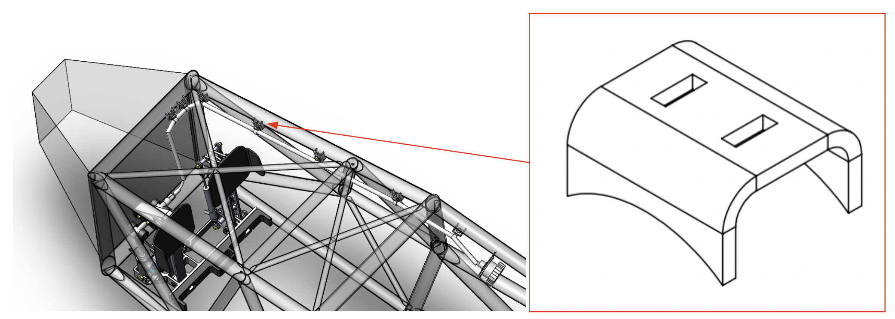
Additional consideration was required for adjuster mounting location due to the importance of accessibility, rigidity, and driver ergonomics during on-track adjustment.
Hydraulic System
The hydraulic system was redesigned to address the reliability and packaging issues observed on B22, where unorganized brake line routing created interference risks and made maintenance difficult. The goals for B23 were to provide consistent brake pressure, minimize overall line length, ensure lines were well-constrained within the chassis, and prevent interference with the wiring harness and other internal components.
Circuit Architecture
The system uses two fully independent hydraulic circuits — one for the front brakes and one for the rear. Each fed by a dedicated master cylinder. Separating the circuits provides a safety redundancy: a failure in one circuit does not result in total brake loss. The front circuit uses a smaller diameter master cylinder while the rear uses a larger diameter master cylinder. Since the front brakes provide the majority of total braking force, they operate at higher hydraulic pressures, requiring a smaller bore to generate the necessary pressure from driver pedal input.
Master Cylinders
Four master cylinder options were evaluated across cost, weight, size, and compatibility with the Tilton bias bar:
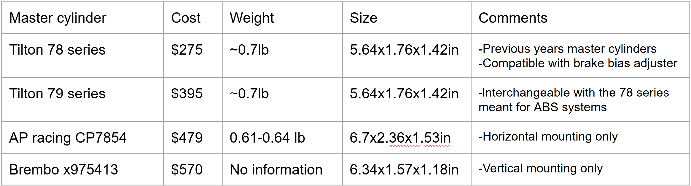
The Tilton 78 Series was selected. It was the least expensive option, had been used successfully by the team in previous years, and was directly compatible with the Tilton bias bar. The primary drawback was its length, which required careful packaging within the pedal tray area. Despite this, its proven reliability and cost advantage made it the clear choice.
Fluid Reservoirs
The brake fluid reservoirs were replaced with AUTOVIC Transparent Motorcycle Rear Brake Masters (9 mm max diameter outlet), paired with Pegasus Racing Remote Brake Fluid Reservoir Hose (5/16 inch ID). The transparent reservoir bodies allow fluid level to be checked visually without disassembly. Custom mounting tabs were fabricated from sheet metal and bent into shape to mount the reservoirs to the chassis. M6 × 1 screws (20 mm long) with M6 × 1 mm 8 mm high locknuts were used to secure all hardware and prevent loosening under vibration.
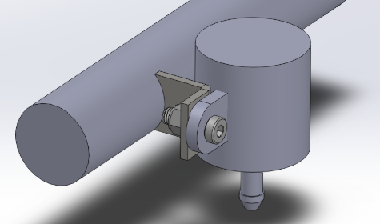
Pressure Transducer Mounts
The pressure transducers were relocated to be mounted in front of the pedal tray, moving them to the right side of the chassis alongside the rear hardline run. This consolidated the hydraulic connections in one area, reduced line complexity, and minimized potential collision with wiring harnesses. Custom mounts were designed and modeled in CAD to secure the transducers to the chassis tubing.
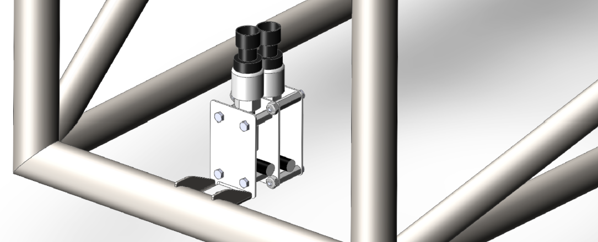
Brake Lines and Circuits
The brake line system was redesigned from scratch to address the ad hoc routing issues on B22, where unplanned line runs resulted in unnecessary length, pinch point risks, and interference with the wiring harness. For B23, all hard lines were modeled in CAD before fabrication to define exact routing paths, bend locations, and lengths.
Hard Line vs. Soft Line Strategy
A key early decision was determining where to use hard lines versus soft lines. Both were procured and tested with driver feedback before committing to a final configuration.
The final configuration uses hard lines on all segments that do not move, and soft lines only at the four corners (where suspension components move during travel) and at the front of the car where the pedal tray adjusts fore-aft. Soft lines at these locations were custom made to the correct length to eliminate excess slack while accommodating full range of motion. The main rear hardline runs along the right side of the chassis, fully isolated from the wiring harness.
The brake bias soft line routing was carefully planned to prevent kinking under bias adjustment, avoid contact with the throttle pedal, and maintain consistent pedal feel through the full range of bias bar motion.
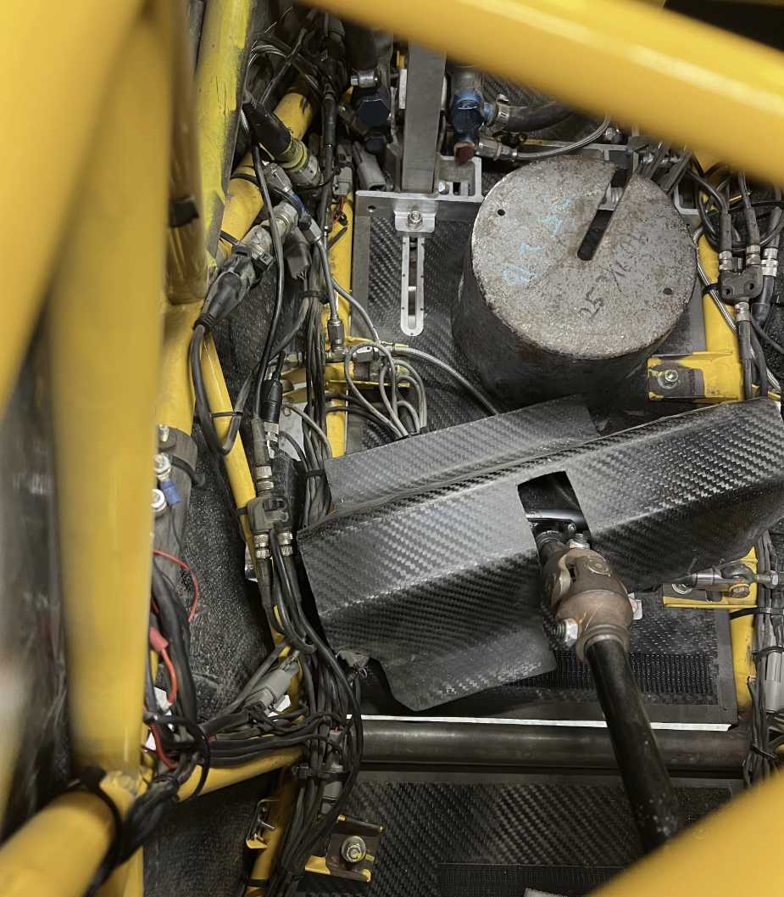
Skills Demonstrated
Design for Manufacturing (DFM) • CAD (SolidWorks) • Structural analysis (FEA, hand calculations) • Manufacturing • Failure analysis
Contact
Email: jennifersili@berkeley.edu
LinkedIn: linkedin.com/in/jennifersili